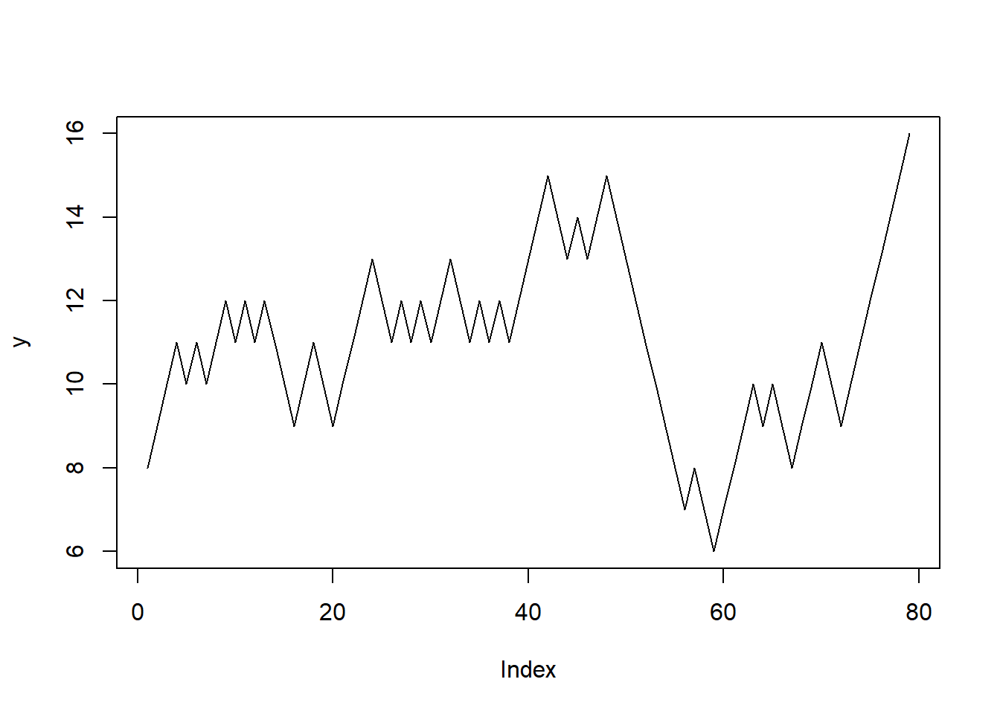
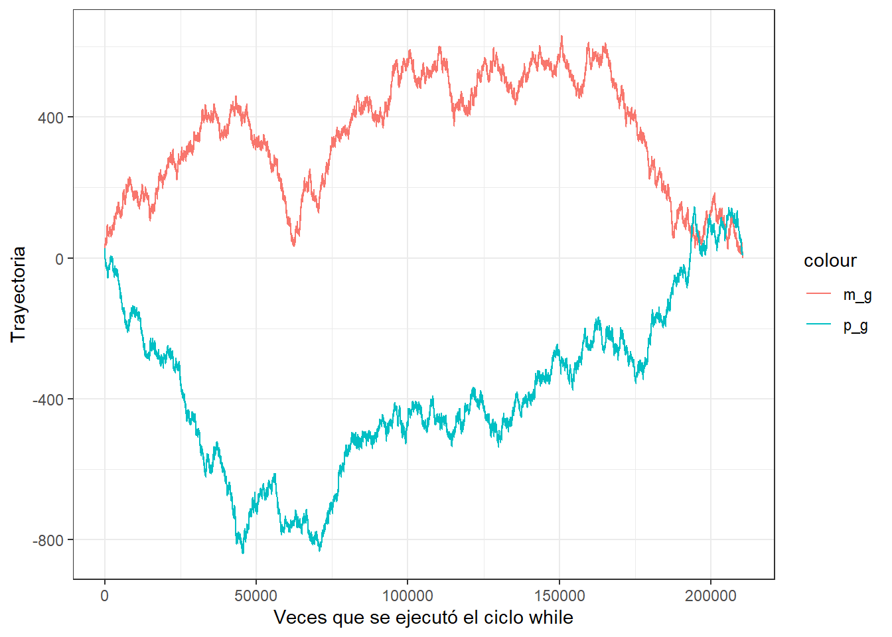
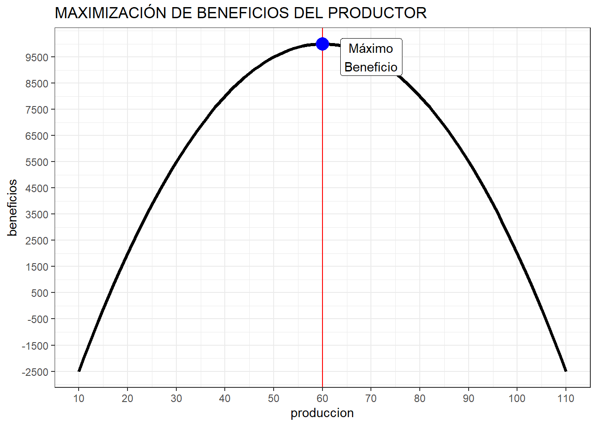

Chapter 11 CICLO WHILE.
En este capítulo aprenderá sobre el uso y aplicaciones del ciclo while(). Primero, se verá la sintaxis del ciclo, posteriormente unos ejemplos siemples y otros usando las declaraciones break y next; y en la parte final, su aplicación en economía, específicamente en la maximización de beneficios del productor.
11.1 Sintaxis del ciclo while.
El ciclo while() sirve para ejecutar una determinada expresión siempre y cuando la condición lógica sea TRUE, una vez que la condición lógica pasa a ser FALSE el ciclo finaliza. Es así que nos servirá para ejecutar expresiones secuenciales.
La sintaxis del ciclo while() es la siguiente.
while (cond) {expression}
Donde cond es la condición lógica y expression es la expresión o expresiones que se ejecutarán siempre y cuando la condición lógica sea TRUE.
Ahora veamos unos ejemplos de como usar este ciclo.
11.2 Ejemplos de uso del ciclo while.
como primer ejemplo vamos a imprimir la oración “EL objeto z vale: …” (en los 3 puntos irá el valor que toma z) siempre y cuando el objeto z que vale 8 sea menor que 15. Si el objeto z es mayor o igual que 15, entonces, se dejará de imprimir la oración. Asimismo, por cada iteración el valor de z se va incrementando en una unidad.
Veamos como sería la sintaxis para este ejemplo.
# Definiendo el objeto z.
z<-8
# Aplicando el ciclo while.
while (z<15) {
print(paste0("El objeto z vale: ",z))
z<-z+1
}## [1] "El objeto z vale: 8"
## [1] "El objeto z vale: 9"
## [1] "El objeto z vale: 10"
## [1] "El objeto z vale: 11"
## [1] "El objeto z vale: 12"
## [1] "El objeto z vale: 13"
## [1] "El objeto z vale: 14"En efecto solo se ha impreso la oración hasta que el valor de z sea menor a 15. Pero ¿cómo sucedió? Primero, se ha creado el objeto z que es igual a 8, luego al crear el ciclo while() en la condición escribimos z<15, por lo que para cada iteración el software evaluaba si z era menor a 15 y si el resultado era TRUE entonces ejecutaba las expresiones: print(paste0("El objeto z vale: ",z)) y z<-z+1. En el primer caso imprimía la oración y en el segundo sumaba 1 al valor de z. Entonces, al inicio z valía 8 entro en la condición y z era menor que 15 por lo que la condición era TRUE entonces ejecutó las expresiones: “El objeto z vale: 8” y sumó a z el valor de 1 con lo cual z pasó a valer 9. Continuó con el mismo proceso hasta que z fue igual a 15 en donde al probar la condición lógica z<15 resultó FALSE por lo que detuvo el ciclo.
Gracias al ciclo while() se puede realizar procesos infinitos, para correr un bucle infinito solo tenemos que colocar TRUE en la condición lógica y ejecutará la expresión infinitas veces (esto no es al 100% porque se detendrá el proceso cuando el computador no pueda seguir ejecutando la expresión, por problemas de capacidad).
A continuación se muestra la sintaxis para un bucle infinito, que imprima infinitas veces la oración “Detenme por favor”. Le recomendamos no correr esta sintaxis, pero si lo hace, para cancelar el bucle solo tiene que presionar la tecla “esc” (escape) en su computador.
# Creando el bucle infinito.
while (TRUE) {
print("Detenme por favor")
}Si usted lo ejecuta, verá que se imprime la oración “Detenme por favor” muchas veces hasta que usted detiene el proceso. Pero ¿Cómo sucedio? Primero, lo que hemos hecho es colocar TRUE en la condición, lo cual hace que la condición lógica siempre sea TRUE por lo que el ciclo while() no se detendrá, entonces, al ser TRUE la condición ejecutará la expresión print("Detenme por favor") hasta que usted lo detenga.
Ahora veremos un ejemplo usando elementos aleatorios. Vamos a definir el objeto x y con valor igual a 7, a este objeto se le irá sumando aleatoriamente +1 o -1 y se realizará este proceso hasta siempre y cuando el objeto x sea mayor igual que 0 y menor igual a 15. Y como último paso graficamos los valores que ha tomado x hasta que la condición lógica sea FALSE.
# Creando el objeto x.
x<-7
# Creando el vector y.
y<-c()
# El ciclo while.
while (x>=0 & x<=15) {
x<-x+sample(c(-1,1), 1)
y<-c(y,x)
}
# Viendo el último valor que toma x
x## [1] 16# Por último graficamos los valores que ha tomado x.
plot(y, type = "l")
Lo que hemos construido es una caminata aleatoria (random walk), y el gráfico lo representa de una manera muy clara. Expliquemos lo que se ha realizado. Primero, se ha creado el objeto x que es igual a 7 y el objeto y que es un vector vacío (Estamos creando este vector porque ahí se guardarán los valores que tomará x). Luego, contruimos el while(), en la condición colocamos las condiciones lógicas x>=0 & x<=15, entonces, mientras x cumpla esas condiciones se ejecutarán las expresiones x<-x+sample(c(-1,1), size = 1) y y<-c(y,x). La primera expresión es la caminata aleatoria, ya que tenemos un valor inicial determinado (x==7) y un proceso aleatorio (sample(c(-1,1), 1))18. Entonces, cada vez que se ejecuta las expresiones se suma un valor igual a +1 o -1 a x y esto se guarda en el objeto y. El ciclo continuará hasta que x no cumpla la condición lógica.
Asimismo, vemos que se detiene el ciclo, porque x ya no cumple la condición lógica, ya que x es igual a 16. Por último estamos graficando el vector y, ya que en ese vector se han guardado los distintos valores que toma x. Para esto usamos la función plot() que se verá más a detalle en capítulos posteriores.
Ahora, veamos un ejemplo similar, pero ahora tendremos dos objetos, el objeto m y el objeto p que valdrán 4 cada uno. A estos objetos se les sumará +1 o -1 hasta que m sea mayor igual que 0 o p sea menor igual que 10. Y como último paso graficamos los valores que ha tomado m y p.
# Definiendo los objetos m y p.
m<-4
p<-4
# Definiendo los objetos en donde se guardarán los resultados.
m_g<-c()
p_g<-c()
# El ciclo while.
while (m>=0 | p<=3) {
m<-m+sample(c(1,-1), 1)
p<-p+sample(c(1,-1), 1)
m_g<-c(m_g,m)
p_g<-c(p_g,p)
}
# Los valores finales que toman m y p.
m## [1] -1p## [1] 13# Graficando la trayectoria de m y p.
library(ggplot2)
df<-data.frame(m_g,p_g)
df$n<-1:length(df$m_g)
ggplot(df,aes(x=n,y=m_g, color="m_g"))+
geom_line()+
geom_line(aes(y=p_g, color="p_g"))+
labs(x="Veces que se ejecutó el ciclo while",
y="Trayectoria")+
theme_bw()
Igual que en el ejemplo anterior hemos creado 2 caminatas aleatorias, la diferencia es que ahora en la condición lógica se especificó el operador o | con lo cual para que la condición sea FALSE los dos objetos tenían que estar fuera de la condición, por un lado m tenía que ser menor que 0 y a la vez p tenía que ser mayor que 8. Esto se comprueba, ya que m cuando se detuvo el ciclo vale -1 y p vale 13.
Por último, estamos graficando las trayectorias pero en este caso estamos usando el paquete ggplot2, el uso de este paquete también se desarrollará en capítulos posteriores. Por el momento, es suficiente si se ha llegado a comprender el uso del ciclo while().
Recuerde que cuando usted replique este ejemplo y el anterior obtendrá resultados distintos, y por ende, gráficos distintos ya que estamos ejecutando procesos aleatorios.
11.3 Aplicaciones con las declaraciones Break y Next.
Las declaraciones break y next cumplen el mismo rol que se explicó en la capítulo anterior. Es así que si deseamos detener el ciclo while() por más que la condición lógica sea TRUE tendremos que usar break y si deseamos saltar una iteración, entonces usaremos la declaración next.
Veamos primero un ejemplo de como usar la declaración break. Vamos a crear una ecuación de segundo grado y vamos asignar valores continuamente hasta que se encuentre una de las raíces. Como no sabemos en que rango se encontrará la raíz, entonces haremos un bucle infinito y se detendrá cuando encuentre la solución.
# La ecuación a encontrar solución.
# x^2+2*x-3=0
# EL ciclo while.
x<-0
while (TRUE) {
y<-x**2+2*x
if(round(y,3)==3){
print(paste0("La raíz o solución de la ecuación es: ", x))
break
}
x<-x+0.001
}## [1] "La raíz o solución de la ecuación es: 1"Nos arroja "La raíz o solución de la ecuación es: 1" y en efecto es 1. Es fácil comprobar por el método de factorización por aspa simple que las raíces son 1 y -3. Pero ¿Qué se hizo? Primero se definió el objeto x igual a 0. Posteriormente en la condicional del ciclo se colocó TRUE por lo que el bucle es infinito, por lo que ejecutará y<-x**2+2*x y se detendrá cuando el valor aproximado hasta las milésimas sea igual a 3, si eso esucede entonces imprimirá “La raíz o solución de la ecuación es: …” y se detendrá el ciclo, pero si no es así entonces, al valor de x le irá sumando 0.001 en cada iteración. Es así que cuando x fue igual a 1 el valor de y fue 3. Por lo que se detuvo el ciclo.
Estoy seguro que usted se esté preguntando ¿tengo que hacer todo eso para saber las raíces de las ecuaciones? ¿Y si no sé desde dónde parte? ¿Y si le sumo a x valores más pequeños? Y otras dudas. Déjeme decirle que este sólo era un ejemplo de uso del ciclo while() con la declaración break y por eso fue programado de esa forma, pero si su interés es calcular las raíces de las ecuaciones cuadráticas o de mayor exponente, hay otras formas más eficientes de obtenerlo. Para una muestra se deja a continuación el siguiente código que resuelve el mismo problema.
# Método sencillo para calcular las raíces de ecuaciones.
as.numeric(polyroot(c(-3,2,1)))## [1] 1 -3Y en efecto nos resulta 1, -3. ¿Le pareció interesante? Estoy seguro que sí, pero no coma ansias este tipo de soluciones y otras se verán en capítulos posteriores.
Ahora veamos un ejemplo en donde se use la declaración next, vamos a sumarle 1000 a cada uno de los elementos del vector t, pero si estos elementos son múltiplos de 5 no se les sumará nada.
# Definiendo el vector t.
set.seed(2021)
t<-sample(1:50, 20)
t## [1] 7 38 46 39 12 6 49 44 5 47 23 48 18 3 26 22 31 19 4 21# El ciclo while.
r<-0
while(r<=length(t)-1){
r<-r+1
if(t[r]%%5==0){
next
} else{
t[r]<-t[r]+1000
}
}
# Cómo quedó el vector t?
t## [1] 1007 1038 1046 1039 1012 1006 1049 1044 5 1047 1023 1048 1018 1003 1026
## [16] 1022 1031 1019 1004 1021Y en efecto, solo los números que no son múltiplo de 5 se les ha sumado 1000. Pero ¿Cómo sucedió? Primero creamos el vector t que tiene 20 elementos aleatorios. Luego creamos el objeto r igual a 0, este objeto nos permitirá hacer el recorrido por todos los elementos del vector t, será como el iterador. Luego en la condicional r<=length(t)-1 le indicamos al software que ejecute las expresiones siempre y cuando el valor de r sea menor o igual al tamaño del vector t menos 1. Entonces, sí el elemento es múltiplo de 5 t[r]%%5==0 pasará a la siguiente iteración, sino es así le sumará 100.
11.4 Aplicación en la maximización de beneficios del productor.
Ahora, veamos una aplicación a la economía, específicamente en la teoría de la empresa. Vamos a maximizar los beneficios del productor, para esto tenemos que recordar que los productores maximizan sus beneficios cuando los ingresos marginales son iguales a los costos marginales.
Sabemos que la función de precios del productor viene determinada por: \[P=600-4Q\] Y la función de costos totales por: \[CT=Q^2+8000\]
El productor actualmente está produciendo 10 unidades y quiere saber cómo sería la trayectoria de las utilidades si produciría hasta una cantidad de 100, asimismo desea saber cuál es la producción que maximiza sus beneficios, así como sus ingresos y costos totales en ese nivel de producción.
Para resolverlo tenemos que recordar que si la diferencia entre el ingreso marginal y el costo marginal es cero entonces el productor está maximizando la utilidad, entonces, como primer paso debemos de calcular el ingreso marginal y el costo marginal.
Calculando el ingreso marginal.
\[IT=P*Q ---->IT=(600-4Q)Q\] \[IT=600Q-4Q^2\] \[IMg=600-8Q\]
Calculando el costo marginal.
\[CT=Q^2+8000\] \[CMg=2Q\]
Una vez que tenemos los ingresos y costos marginales. Procedemos a calcular lo que se pide en el ejercicio.
produccion<-10
beneficios<-c()
while (produccion<=110) {
IMg<-600-8*produccion
CMg<-2*produccion
IT<-600*produccion-4*produccion^2
CT<-produccion^2+8000
beneficios<-c(beneficios,IT-CT)
if(IMg-CMg==0){
print(paste0("La producción máxima se alcanza cuando se produce: ",
produccion," unidades"))
}
produccion<-produccion+1
}## [1] "La producción máxima se alcanza cuando se produce: 60 unidades"El software nos indica que la producción que maximiza los beneficios es de 60 unidades producidas. Podemos graficar este resultado.
df<-data.frame(produccion=10:110,
beneficios=beneficios)
library(ggplot2)
library(ggrepel)
ggplot(df, aes(x=produccion,y=beneficios))+
geom_line(size=1.3)+
scale_x_continuous(breaks = seq(10,110,10))+
scale_y_continuous(breaks = seq(min(beneficios),max(beneficios),1000))+
geom_vline(xintercept = 60, color="red")+
geom_label(x=70, y=max(beneficios)-500,label="Máximo\nBeneficio")+
geom_point(x=60,y=max(beneficios), size=5, color="blue")+
labs(title = "MAXIMIZACIÓN DE BENEFICIOS DEL PRODUCTOR")+
theme_bw()
Se puede apreciar que el máximo beneficio se alcanza con la producción de 60 unidades.
Al igual que la vez anterior, el gráfico se hizo con ggplot2, que se verá en capítulos posteriores.
Ahora, para calcular los ingresos y costos totales que maximizan el beneficio podemos correr lo mismo pero solo agregamos un brake cuando el IMg es igual al CMg.
produccion<-10
beneficios<-c()
while (produccion<=110) {
IMg<-600-8*produccion
CMg<-2*produccion
IT<-600*produccion-4*produccion^2
CT<-produccion^2+8000
beneficios<-c(beneficios,IT-CT)
if(IMg-CMg==0){
print(paste0("La producción máxima se alcanza cuando se produce: ",
produccion," unidades"))
break
}
produccion<-produccion+1
}## [1] "La producción máxima se alcanza cuando se produce: 60 unidades"Lo que nos resulta en los montos de ingresos y costos totales cuando se alcanza la maximización de beneficios.
# Ingresos totales.
IT## [1] 21600# Costos Totales.
CT## [1] 11600# Beneficio total.
beneficios[length(beneficios)]## [1] 10000Por último, solo como un aperitivo para lo que vendrá en los siguientes capítulos. Es posible que usted haya olvidado derivar o su función de costo o ingresos es muy complicada de derivar. No se preocupe que el software R también deriva e integra.
Para el ejercicio, si no sabriamos derivar, no sabríamos como se calcula el ingreso marginal y el costo marginal, entonces se lo dejaríamos al software.
# Para calcular el ingreso marginal.
IT<-expression(600*Q-4*Q^2)
# Derivando.
D(IT,"Q")## 600 - 4 * (2 * Q)# Para calcular el costo marginal.
CT<-expression(Q^2+8000)
# Derivando.
D(CT,"Q")## 2 * QSi usted regresa líneas atrás podrá darse cuenta que esos son los valores que se usaron para el ingreso y costo marginal. Igualmente, por el momento es suficiente con que quede claro el uso del ciclo while() en capítulos posteriores se mostrará como derivar e integrar para hacer los procesos más automáticos.
En el siguiente capítulo veremos el tema de data frame. Uno de los objetos primordiales cuando se desea trabajar con datos.
Podría dejar el directorio de trabajo en esa ruta, pero si quisiera importar el archivo que deseo tendría que especificar la ruta del archivo y eso me demoraría más tiempo, ya que tendría que escribir la ruta completa cada vez que deseo cargar un archivo.↩︎